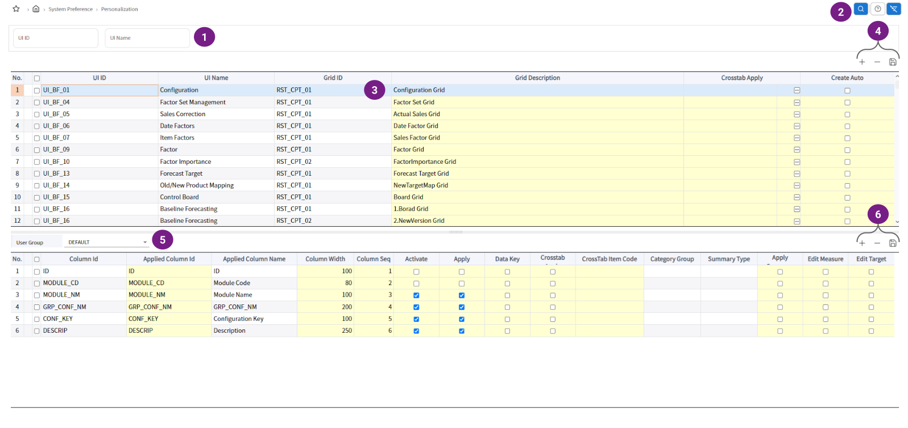
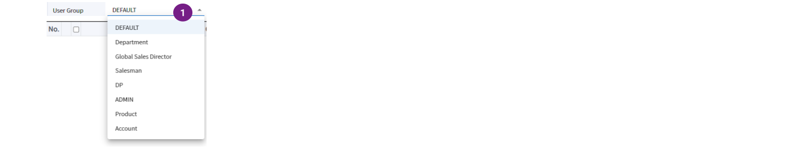

개인화 기준정보
사용법

- 검색 항목에 찾는 화면 아이디 또는 화면명을 입력합니다.
- 입력 받은 검색 조건으로 개인화 기준정보를 조회합니다.
- 상세 조회 : 상단 그리드에서 선택한 행의 화면-그리드별 개인화 기준정보 상세 내역을 하단 그리드에 조회합니다.
- 개인화 기준정보를 적용할 대상 화면-그리드 정보를 추가, 삭제, 저장 합니다.
추가 : 상단 그리드에 행을 추가하여 새로운 개인화 기준정보 적용 대상 화면과 그리드를 등록합니다. 정보 입력 후 저장 버튼을 클릭해서 등록 절차를 완료해야 합니다.
삭제 : 선택한 모든 개인화 기준정보를 삭제합니다.
저장 : 추가 및 변경된 개인화 기준정보를 저장합니다.- 사용자 그룹 선택 : 특정 사용자 그룹을 선택하여, 상단 그리드에 선택된 행의 화면-그리드의 개인화 기준정보를 적용하고 조회 가능합니다.
- 개인화 기준정보 상세 내역를 추가, 삭제, 저장 합니다.
추가 : 하단 그리드에 행을 추가하여 새로운 개인화 기준정보 설정 컬럼을 등록합니다. 정보 입력 후 저장 버튼을 클릭해서 등록 절차를 완료해야 합니다.
삭제 : 선택한 모든 개인화 기준정보 설정 컬럼를 삭제합니다.
저장 : 추가 및 변경된 개인화 기준정보 상세 내역를 저장합니다.
사용자 그룹 선택

- 해당 화면-그리드의 개인화 기준정보 적용 대상인 사용자 그룹을 선택 가능합니다.